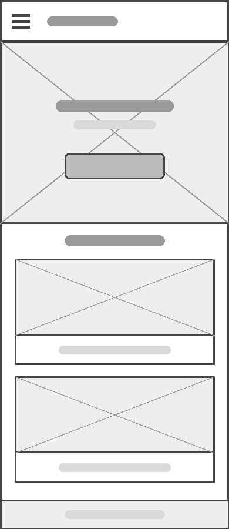
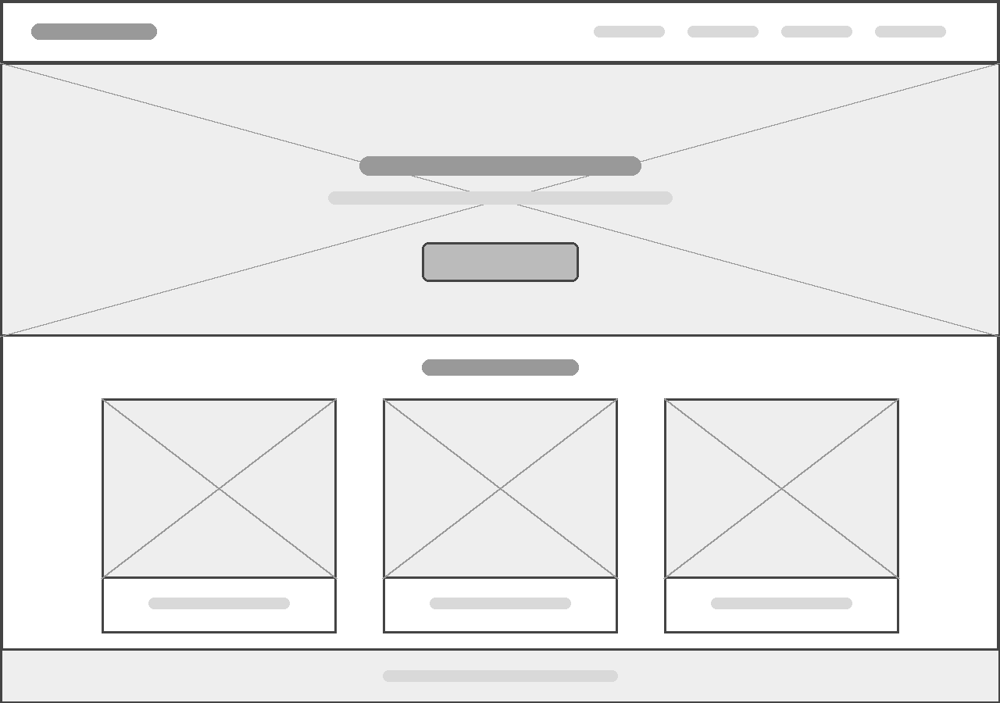

Site Name
Animefans
The name Animefans represents a website created for people who enjoy anime and want to discover new series and learn more about them.
Site Purpose
The site provides information about different anime, including their release dates, seasons, characters, genres, and recommendations.
Scenarios
What anime should I start watching as a complete beginner?
What anime genres are the most popular?
Are there any educational anime?
Is it possible to learn about Japanese culture and language through anime?
What is manga?
Color Schema
Dark purple (#4B2E83) will be used for the header and main headings. Orange (#F28C28) will be used for accents and buttons. White (#FFFFFF) will be used as the main background color. Black (#000000) will be used for body text.
Typography
Merriweather will be used for headings. Open Sans will be used for body text and general content.
Wireframes
Mobile

Desktop
